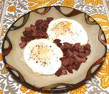

|
Eggs with Soujuk SausageTurkey | ||||
| Serves: Effort: Sched: DoAhead: |
2 break ** 25 min Part |
A very quick breakfast dish with plain eggs offset by intensely flavored Soujuk sausage. In Turkey it's Sucuk, but the Armenian spelling is how it's labled here in Yerevan West. | |||
|
|
3 2 2 4 tt tt |
oz T T |
Soujuk Sausage (1) Butter Water Eggs Salt Pepper |
Make - (25 min)
|